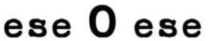

Trade Mark Journal No.2025/046 14 November 2025
WO0000001883401 (25)
Office of origin: Spain
Date of International Registration:2 May 2025
Date of designation in the UK:
2 May 2025

International priority date claimed: 16 April 2025
(Spain)
(4315068)
- Class 25
- Clothing; women's clothing; outerclothing; footwear; headwear; shoes; dress shoes; high-heeled shoe; beach shoes and sandals; casual shoes; flat shoes; sandals; ballet flats [footwear]; flip flops; boots; half-boots; suits [clothing]; tailleur; pantsuits; jeans; dresses; bathing suits; bandeau brassieres [underwear]; tops (t-shirts); fashion hats; brassieres; sweatshirts; sweaters; sweaters [polo shirts]; shorts; over shirts; pullovers; kimonos; cardigans; bib overalls; jumper dresses; pajamas; leggings (clothing); petti-pants; polo shirts; ponchos; knitwear [clothing]; linen clothing; clothing made of animal skins; trousers; tights; slippers; handkerchiefs [clothing]; pareus; parkas; pelisses; bib overalls; stockings; miniskirts; mittens; coveralls clothing; jerseys; body linen [garments]; leggings; caps; caps [headwear]; gloves [clothing]; stoles; skirts; foulards [clothing articles]; gabardines; knitwear [clothing]; corsets; panties; shell jackets; stuff jackets; rain slickers; belts; outfits (clothing), twin sets; neckties; shawls; T-shirts; nightgowns; cloaks; blousons; vests; shirts; leggings; scarves; socks; dressing gowns; bloomers; blouses; coats; esparto shoes or sandals; jackets; anoraks.
MODA ESEOESE, S.L.U.
Representative: PONTI & PARTNERS, SLP, Edifici Prisma,, Av. Diagonal, 611-613, Pl. 2., E-08028 Barcelona, SPAIN